Последнее сакральное побережье за пределами массовой цивилизации. Маленькие камерные группы. Возможность индивидуального тура.
◈ Внедорожники 4x4 Toyota Land Cruiser
|
◈ VIP-трансфер из аэропорта Дили
Официальная Статистика UNWTO & World Bank
Редчайший изолированный уголок планеты
«Тимор-Лесте входит в ТОП-3 наименее посещаемых стран мира. За весь год в страну въезжает менее 10 000 досуговых туристов (это в среднем менее 30–50 туристов на всю страну одновременно!). В столице Дили постоянно проживает около 100 европейцев и иностранцев. Это редчайший изолированный уголок планеты, но лет через пять всё может измениться — успейте увидеть его первым.»
< 50
Туристов на всю страну одновременно
~100
Европейцев-экспатов в Дили
5 Лет
До появления массового туризма
Проживание & Комфорт
Где Мы Живем: Лучшие Hotels Региона
We select top-tier 4-star hotels and verified heritage properties with excellent reviews.
4★ Премиум · Дили
★ 8.3 Booking
Novo Turismo Resort & Spa
The capital’s premier beachfront hotel. Oceanfront pool, spacious air-conditioned rooms, fine dining, and peaceful tranquility.
Category: Superior Ocean
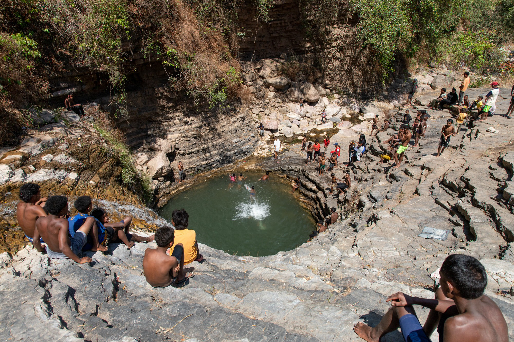
Историческое Наследие
Pousada de Baucau
Atmospheric Portuguese-era heritage hotel. High ceilings, vintage furnishings, and a panoramic terrace overlooking gardens and sea.
Category: Deluxe Heritage
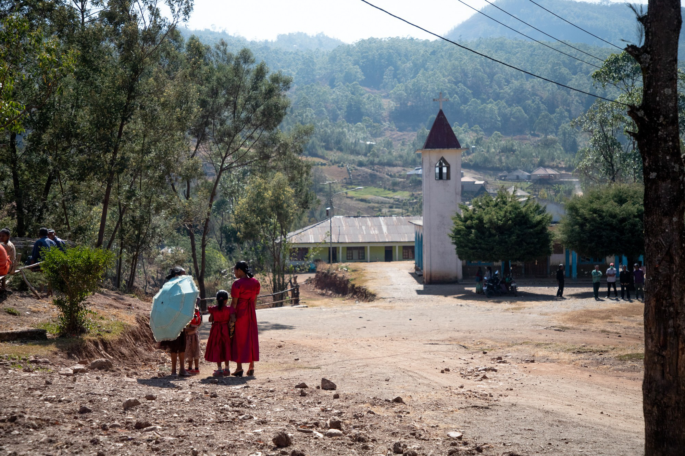
Эко-Бунгало · Остров Атауро
Atauro Waterfront Eco Lodge
Charming wooden bungalows directly on the white sand beach. Snorkel on pristine coral reefs right from your doorstep.
Category: Beachfront Bungalow
География Экспедиции
Карта Маршрута по Тимору
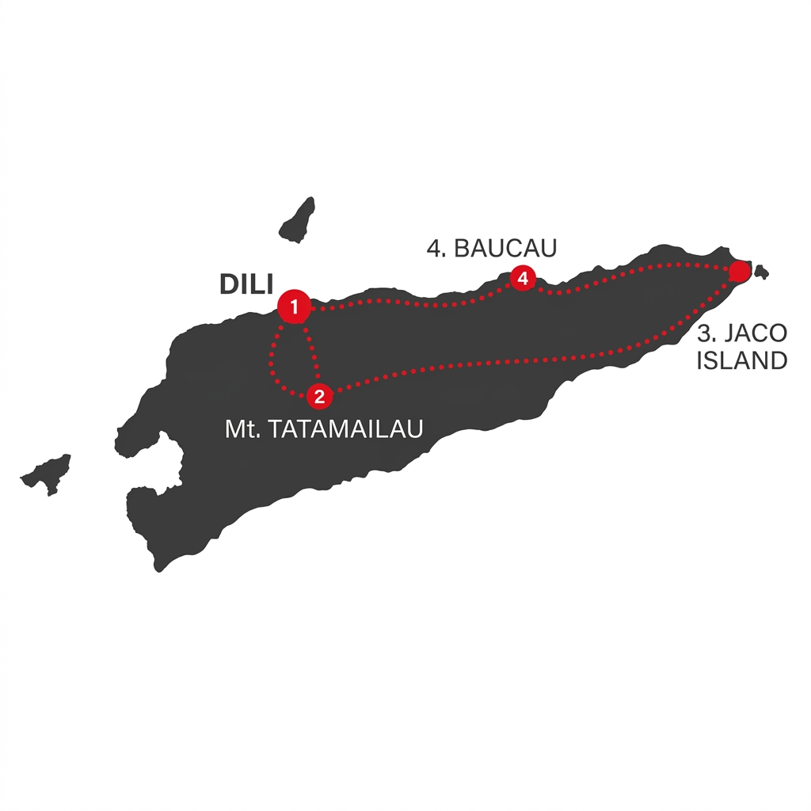
Варианты Участия
Выберите Программу
Маленькие камерные группы. Возможность индивидуального тура.
Тимор-Лесте: Полное Кольцо (8 Дней)Все завтраки включены. Проживание в Novo Turismo 4* (Дили) и Pousada de Baucau. 4x4 Land Cruiser.
€9,000
DAY 01
Capital Dili, Coffee & VIP Transfer
Arrival in Dili. Private tarmac greeting by dedicated 4x4 Toyota Land Cruiser (no local taxis). Check-in at Novo Turismo Resort 4*. Explore the capital, visit the Cristo Rei landmark, Ascension Oil atelier, and specialty mountain coffee tasting.
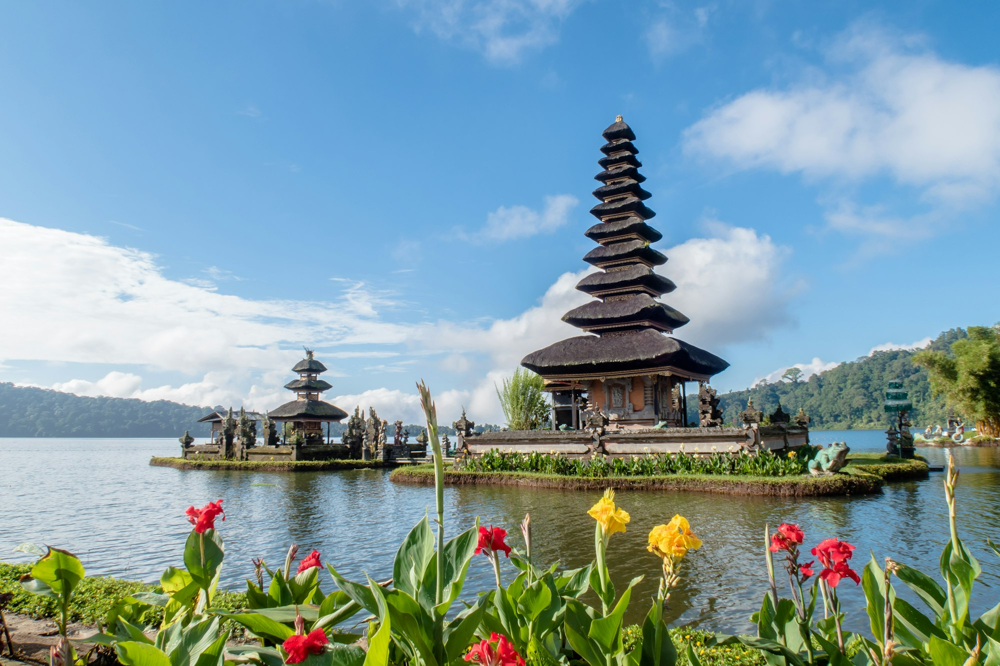
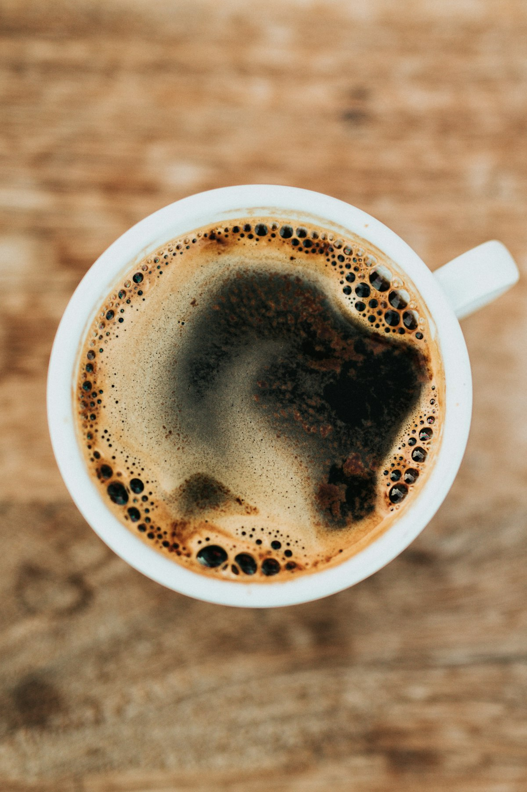
DAY 02
Ocean: Atauro Island & Pygmy Blue Whales
Private boat expedition into the Ombai-Wetar Strait to witness Pygmy Blue Whales in their natural migration corridor. Landing on Atauro Island with pristine snorkeling at the world-renowned Garden Reef.
🐋 Blue Whale Migration Schedule
• Sept – Dec (Peak Season): Southward migration from Banda Sea to Australian coast.
• March – April: Northward migration from Australian coast back to Banda Sea.
* Year-round: Resident spinner dolphin pods, pilot whales, and the planet's highest marine biodiversity reef.
▶ VIDEO: WHALE MIGRATION
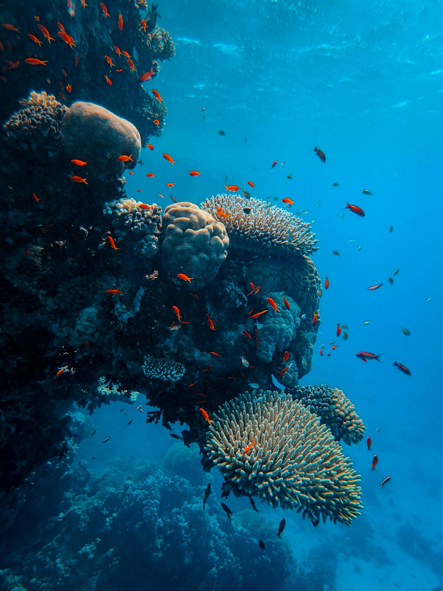
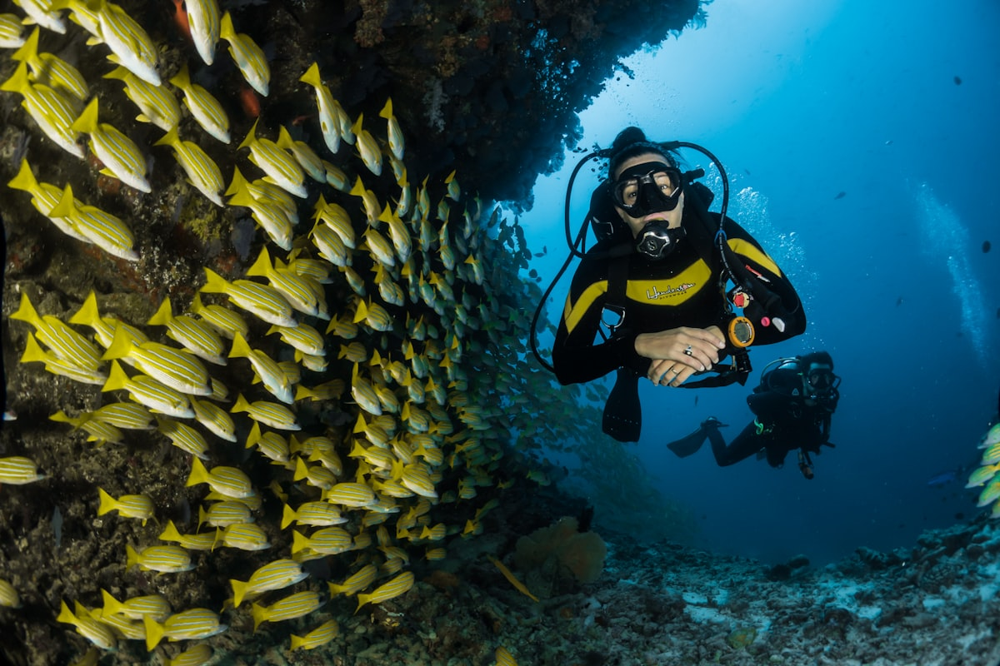
DAY 03
Highlands: Seloi Kraik, Maubisse & Dokomali
Journey south by 4x4 Land Cruiser. Stop at highland village Seloi Kraik (Aileu district) with mountain lake and rice terraces. Visit organic coffee plantations in Maubisse and trek to Dokomali Waterfall (Bee Tudak).
DAY 04-05
Eastbound: Colonial Baucau
Coastal drive east. Rest at the historic Portuguese colonial fortress Pousada de Baucau. Refreshing swim in Baucau's natural mineral spring pool set within ancient cliffs.
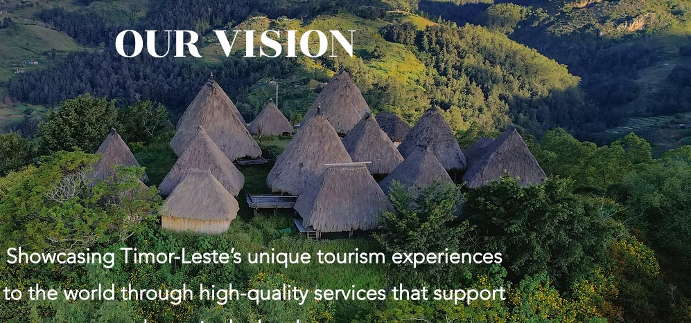
DAY 06-07
Sacred Jaco Island & Nino Konis Santana National Park
Explore Timor-Leste's premier national park — Nino Konis Santana. Boat crossing to the uninhabited sacred island of Jaco: untouched white sand beaches, turquoise waters, pristine coral reefs, and wild deer.
🌿 Park Protected Ecosystem
• Dry Deciduous Forest: Protects the country's last remaining stretch of primary dry forest.
• Endemic Biodiversity: Sanctuary for unique endemic flora, fauna, wild deer, and rare bird species.
* Cultural heritage: Authentic Fataluku sacred stilt architecture (Uma Lulik).
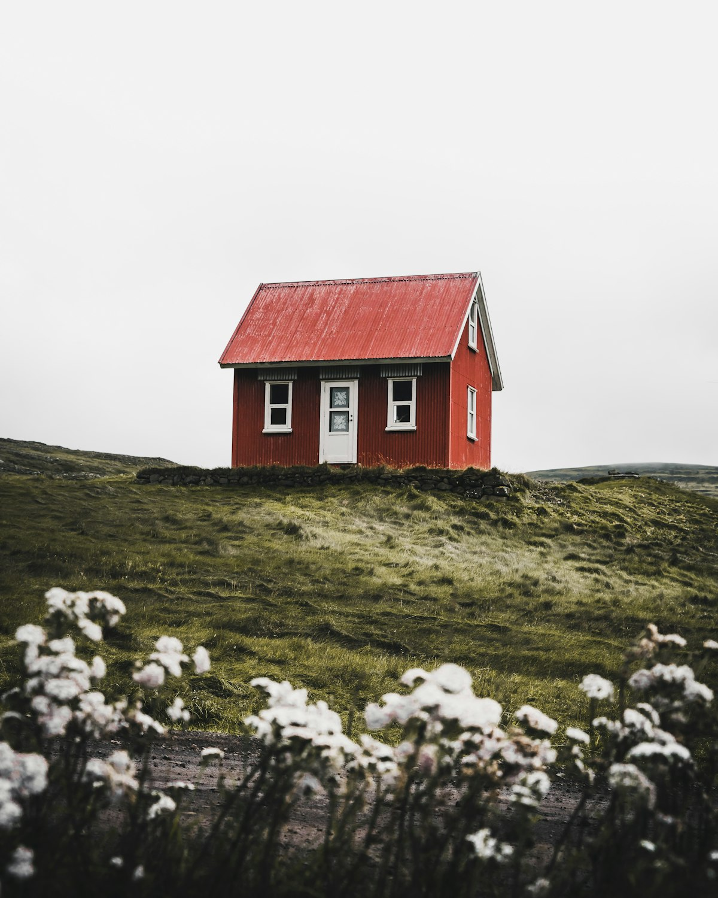
DAY 08
Departure
Return to Dili, artisanal Tais textile shopping, and organic coffee beans. 4x4 airport transfer for flight departure.
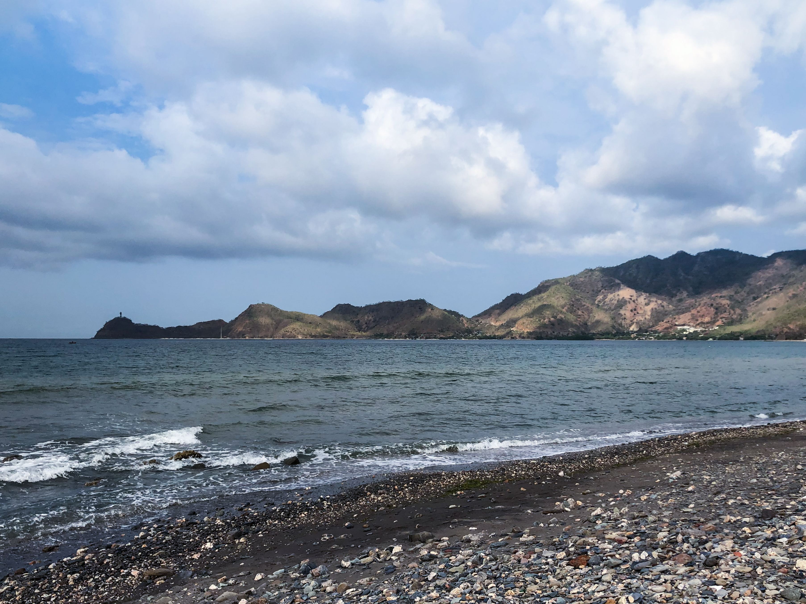
Timor-Leste: Express Expedition (3 Days)Whales, Atauro Island Reef, Seloi Kraik Highland Village & Dokomali Waterfall.
€3,500
DAY 01
Dili & 4x4 Land Cruiser Reception
VIP arrival at Dili Airport on 4x4 Land Cruiser. Novo Turismo 4*, capital exploration, coffee and Ascension Oil atelier.
DAY 02
Pygmy Blue Whales & Atauro Reef
Speedboat excursion to encounter migrating blue whales in the Ombai Strait. World-class coral reef snorkeling at Atauro Island.
• March – April: Northward migration (Australia → Banda Sea).
▶ VIDEO: WHALE MIGRATION
DAY 03
Seloi Kraik, Maubisse & Dokomali
Highland expedition to Seloi Kraik village, Maubisse plantations, and Dokomali waterfall. Transfer to airport for flight departure.
Аутентичный Бали (5–7 Дней)Сакральный Бали без мишуры. Музей Neka Art Museum и прямой диалог со старейшинами.
От €7,500
ДЕНЬ 01-02
Культура Убуда & Neka Art Museum
Проживание в премиальном бутик-отеле. Частный визит в музей **Neka Art Museum**, где выставлены работы Валерия Латыпова.
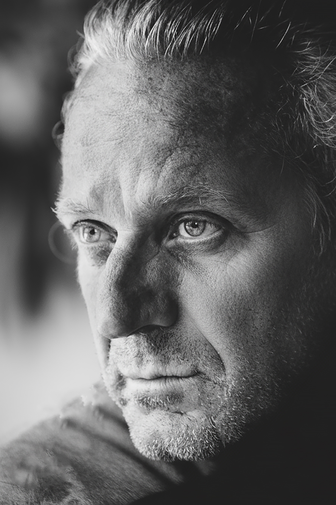
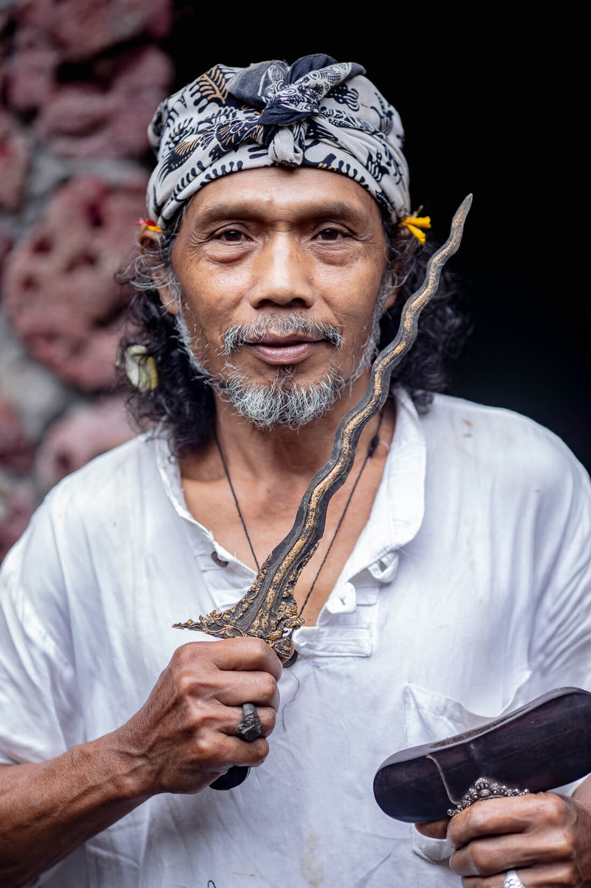
ДЕНЬ 03-05
Диалог со Старейшинами без Переводчиков
Валерий свободно владеет индонезийским языком (BIPA-2) и проводит живые встречи с неговорящими по-английски хранителями балийских традиций.
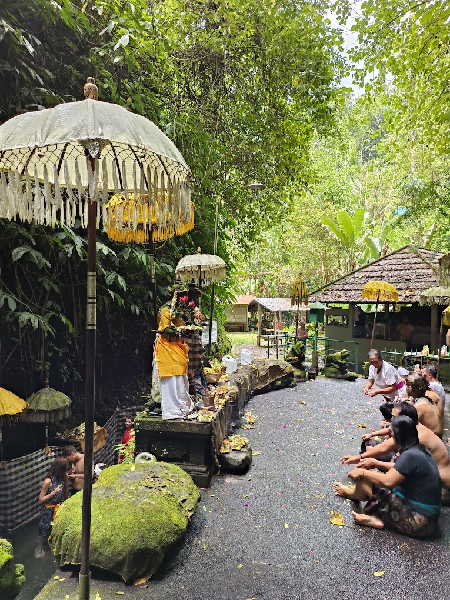
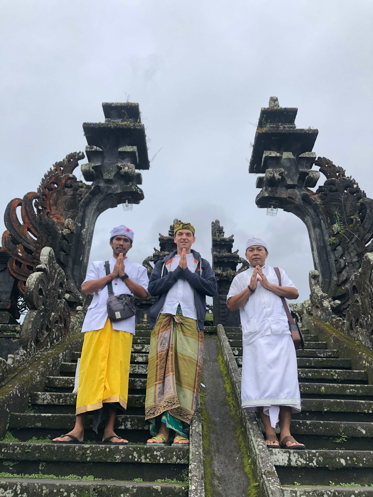
✨ Комбо-Экспедиция: Бали (7 Дней) + Тимор-Лесте (5 Дней)7 дней погружения в сакральную культуру Бали + 5 дней автоэкспедиции по дикому Тимору.
Расчет по запросу
Двойной Маршрут для Искателей
Сначала 7 дней эстетики, расслабления и встреч с хранителями традиций на Бали, затем часовой перелет в Дили и 5 дней настоящей экспедиции на внедорожниках по первозданному Тимору.
Автор и Проводник
Валерий Латыпов
«Главная ценность сегодня — настоящий, неискаженный опыт и чистая тишина, которую уже невозможно найти на массовых курортах.»
Прямой разговор без переводчиков: Валерий свободно владеет индонезийским языком (сертифицированный уровень BIPA-2). Это обеспечивает прямой диалог со старейшинами и хранителями традиций.
Признание в искусстве: Живописные работы Валерия находятся в коллекции знаменитого национального музея Neka Art Museum в Убуде.
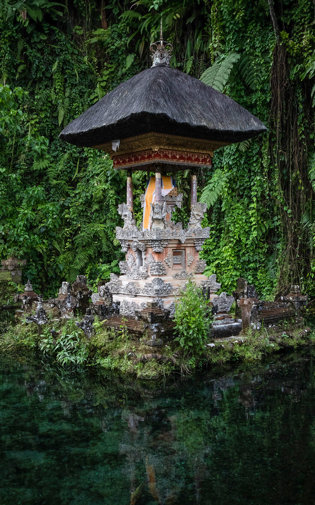
Маленькие Камерные Группы
Запросить Участие
Маленькие камерные группы. Возможность проведения полностью индивидуального тура под ваши даты.
 4★ Премиум · Дили
★ 8.3 Booking
4★ Премиум · Дили
★ 8.3 Booking